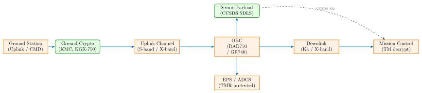
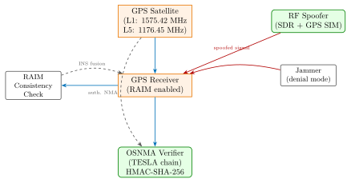

Chapter 33: Satellite and Aerospace Hardware Security¶
Satellite and aerospace systems operate in environments of extreme physical hostility – high-energy particle radiation, electromagnetic interference, and thermal cycling – while simultaneously requiring strong cryptographic assurance against adversaries capable of sophisticated signal manipulation, spoofing, and uplink jamming. This chapter covers the hardware architectures used to address both the environmental and adversarial threat landscape, from radiation-hardened processor design through GPS anti-spoofing, avionics bus security, and post-quantum satellite communications.
33.1 Space Radiation Environment¶
The near-Earth radiation environment is dominated by three populations of energetic particles: (1) trapped protons and electrons in the Van Allen radiation belts, (2) galactic cosmic rays (GCR), and (3) solar energetic particles (SEP) from flares and coronal mass ejections.
33.1.1 Van Allen Radiation Belts and Orbit Comparison¶
The inner Van Allen belt (1,000–6,000 km altitude) contains protons with energies up to 600 MeV and electrons up to several MeV. The outer belt (13,000–40,000 km) is primarily electrons up to 10 MeV. Table 33.1 compares radiation dose and SEU rates by orbit.
| Orbit | Altitude (km) | TID/year (krad Si) | SEU rate (err/bit/day) | Shield. (mm Al) |
|---|---|---|---|---|
| LEO (ISS) | 400 | 5–10 | \(10^{-8}\) | 10 |
| LEO (Sun-sync) | 600 | 10–30 | \(10^{-7}\) | 10 |
| LEO inner belt | 1,200 | 50–200 | \(10^{-6}\) | 20 |
| MEO (GPS) | 20,200 | 500–2000 | \(10^{-5}\) | 40 |
| GEO | 35,786 | 100–500 | \(10^{-6}\) | 15 |
| HEO (Molniya) | 500–40,000 | 200–3000 | \(10^{-5}\) | 30 |
33.1.2 Single-Event Effects¶
A Single-Event Upset (SEU) occurs when a single energetic particle deposits enough charge to flip a memory bit. The critical charge \(Q_c\) (in femtocoulombs) and LET (Linear Energy Transfer, in MeV\(\cdot\)cm\(^2\)/mg) threshold characterise the sensitivity of a device. For modern SRAM at 28 nm: \(Q_c \approx 1\) fC, LET threshold \(\approx 1\) MeV\(\cdot\)cm\(^2\)/mg, cross-section \(\sigma \approx 10^{-8}\) cm\(^2\)/bit.
Single-Event Latch-up (SEL) is destructive: a parasitic thyristor latches into a low-impedance state, drawing destructive current. Radiation-hardened designs use Silicon-On-Insulator (SOI) process nodes to eliminate the parasitic path, or implement current-limit fuses per memory block.
33.2 Radiation-Hardened Processor Hardware¶

33.2.1 BAE Systems RAD750¶
The BAE Systems RAD750 is the radiation-hardened PowerPC 750 derivative:
-
Process: IBM 0.25 \(\mu\)m CMOS SOI (rad-hard design rules, enclosed transistors)
-
Clock: 33–200 MHz; typical mission frequency 133 MHz
-
TID tolerance: 1 Mrad (Si), SEL immune (SOI substrate eliminates parasitic thyristor)
-
SEU rate: \(< 10^{-10}\) errors/bit/day in GEO (ECC-protected caches)
-
Power: 5 W at 133 MHz, 3.3 V core; rad-hard 64-bit bus
-
Deployed on: Mars Reconnaissance Orbiter, Kepler, MAVEN, New Horizons, MESSENGER
33.2.2 Cobham Gaisler GR740¶
The CAES (formerly Cobham) GR740 quad-core SPARC V8 processor:
-
Process: TSMC 65 nm rad-hard CMOS (RHBD standard cells)
-
Cores: 4\(\times\) LEON4FT with hardware FPU, 1 GHz maximum
-
TID tolerance: 300 krad (Si)
-
SEU mitigation: EDAC on all memories, TMR on flip-flops in cache controller
-
Interfaces: SpaceWire (ECSS-E-ST-50-12C), CAN 2.0, MIL-STD-1553B
-
Deployed on: ESA future missions, CNES satellites
33.2.3 Microchip RTG4 FPGA¶
The Microchip (formerly Microsemi) RTG4 radiation-hardened FPGA:
-
Process: 130 nm CMOS radiation-hardened (proton and heavy ion tested)
-
Logic: 151,824 LUT-4 cells, 462 user I/Os, 64\(\times\) SERDES (3.125 Gbps)
-
TID tolerance: 100 krad (Si); SEU immune logic (RHBD flip-flops)
-
Non-volatile: flash-based configuration, no scrubbing required (unlike SRAM FPGAs)
-
Crypto: hardware AES-256 and SHA-256 fabric cores supported
-
Deployed on: cubesats, small GEO payloads, NASA CubeSat Launch Initiative
33.3 Radiation Mitigation Techniques¶
Triple Modular Redundancy (TMR): Three identical circuit instances compute in parallel; a majority voter selects the result. Any single SEU in one instance is masked. FPGA implementation overhead: \(3\times\) LUT utilisation plus voter logic (\(\approx 5\%\) additional).
-- VHDL TMR voter for safety-critical register
architecture rtl of tmr_voter is
begin
process(A, B, C)
begin
-- Majority vote: output asserted if 2 of 3 inputs agree
Q <= (A and B) or (B and C) or (A and C);
end process;
end rtl;
DICE (Dual Interlocked storage Cell): A bistable cell with two storage nodes that are mutually interlocked; a single-node upset cannot propagate to flip the cell state. Used in rad-hard SRAM and flip-flop libraries. Area overhead vs. standard cell: \(\approx 2.5\times\); no speed penalty.
EDAC (Error Detection and Correction): SECDED (Single Error Correct, Double Error Detect) Hamming codes applied to all memory arrays. For a 64-bit data word: 7 check bits, covering \(2^7 = 128\) syndrome patterns. Typical EDAC latency: 1–2 clock cycles for correction.
Memory Scrubbing: For SRAM-based FPGAs (e.g., Xilinx QV Virtex-5QV), configuration bits can be upset by radiation. A scrubber periodically reads the configuration frame, computes CRC, and rewrites corrected frames to prevent accumulated errors from causing functional failure. Scrub rate: typically 1 full bitstream per 100 ms.
/* Xilinx Virtex-5QV ICAP scrubber (C pseudocode) */
while (1) {
for (frame = 0; frame < TOTAL_FRAMES; frame++) {
read_frame_via_ICAP(frame, buf);
if (ecc_check(buf) != ECC_OK) {
correct_and_write_frame(frame, buf);
log_seu_event(frame, timestamp);
}
}
sleep_ms(100);
}
33.4 CCSDS Space Data Link Security (SDLS)¶
CCSDS 352.0-B-2 (Space Data Link Security, 2019) defines authenticated encryption for Telecommand (TC) and Telemetry (TM) frames using:
-
Authenticated Encryption: AES-256-GCM (IETF RFC 5288 variant adapted for space)
-
Digital Signature: ECDSA P-256 (NIST FIPS 186-4) for command authentication
-
Key Management: CCSDS 351.0-M-1 defines the Space Key Management Protocol (SKMP)
CCSDS TC frame structure with SDLS security header/trailer:
TC Frame (CCSDS 232.0-B-4 + SDLS 352.0-B-2):
+------------------+----------+-----------+----------+---------+
| Primary Header | Sec. Hdr | Sec. Data | Sec. Tlr | ECF |
| 5 bytes | 6 bytes | variable | 16 bytes | 2 bytes |
+------------------+----------+-----------+----------+---------+
Sec. Hdr: SPI (2B) + IV (4B)
Sec. Tlr: AES-256-GCM authentication tag (128-bit)
ECF: Error Control Field (CRC-16-CCITT)
Key management: Master Key pre-loaded into spacecraft Key Management Facility (KMF) during ground testing; session keys derived per-link using ECDH P-256 ephemeral exchange or wrapped with the master key (key transport mode).
CCSDS 351.0-M-1 Space Key Management Protocol: Defines procedures for initial key load (physical delivery to launch facility), operational key exchange, key revocation (zeroisation command authenticated with current key), and key recovery from backup KMF.
33.5 GPS Signal Structure and Spoofing Attacks¶

33.5.1 GPS Signal Structure¶
-
L1 C/A: 1575.42 MHz, BPSK modulated, C/A code 1023 chips at 1.023 Mchip/s, 50 bps navigation message. No authentication – spoofable without cryptographic keys.
-
L2C: 1227.60 MHz, civil signal, BPSK(1) + BPSK(10), L2 CM + CL codes.
-
L5: 1176.45 MHz, BPSK(10), 10.23 Mchip/s, safety-of-life signal (ICD-GPS-705).
-
M-Code: encrypted military signal on L1 and L2, BOC(10,5) modulation, PRN code classified, requires SAASM (Selective Availability Anti-Spoofing Module) or PPS-SM for reception.
33.5.2 Galileo OSNMA – Open Service Navigation Message Authentication¶
Galileo OSNMA (ICD Issue 1.1, 2023) applies the TESLA (Timed Efficient Stream Loss-tolerant Authentication) delayed key disclosure protocol:
-
Satellite pre-computes hash chain: \(K_0 \leftarrow K_1 \leftarrow \cdots \leftarrow K_n\) using HMAC-SHA-256, root key \(K_0\) signed with ECDSA P-256.
-
At epoch \(i\): satellite broadcasts data \(D_i\) + HMAC-SHA-256(\(K_i\), \(D_i\)) as MAC.
-
At epoch \(i+1\): satellite discloses \(K_i\).
-
Receiver verifies: \(K_i\) hashes to \(K_{i-1}\) (chain integrity), then verifies MAC on \(D_i\).
A spoofer cannot forge the authentication tag without knowing future keys (one-way chain property). OSNMA key size: 128-bit TESLA key, 256-bit ECDSA root key, 32-byte MAC per subframe.
33.5.3 Military GPS: M-Code and SAASM¶
M-Code (Modernized Military GPS Signal): BOC(10,5) modulation centred at L1/L2, spectral separation from C/A for anti-jam. Receiver requires SAASM (Selective Availability Anti-Spoofing Module, NSA TYPE-1 certified) or Security Module (SM) for PPS (Precise Positioning Service).
KGX-750 (General Dynamics): an NSA-certified GPS security module providing M-Code decryption and zeroisation on tamper detection (> 45 g shock, 0.1 V/m EMI). JDAM (Joint Direct Attack Munition) guidance: embedded KGX-750 equivalent for GPS-guided munitions, zeroises under physical compromise within 1 ms.
33.5.4 Spoofing Detection Techniques¶
AGC Monitoring: Automatic Gain Control voltage drop indicates sudden strong signal source (spoofer overpowering legitimate signal). Threshold: AGC change \(> 3\) dB in \(< 100\) ms triggers alert.
Multipath Indicators: Code-carrier divergence monitor; spoofed signals often show zero multipath (perfect signal), unlike genuine urban environment signals.
RAIM (Receiver Autonomous Integrity Monitoring): Consistency check across all visible satellites: compute position from each \(\binom{N}{N-1}\) subset, compare residuals; a spoofed satellite produces outlier. ARAIM (Advanced RAIM) extends to multi-constellation (GPS + Galileo + GLONASS + BeiDou).
Multi-constellation cross-check: GPS L1 C/A spoofable; simultaneously receiving authenticated Galileo OSNMA signal and cross-checking position (\(\Delta\)pos \(< 1\) m expected) detects GPS-only spoof.
INS/IMU fusion: Inertial Navigation System maintains dead-reckoning trajectory between GPS epochs. Sudden GPS position jump inconsistent with IMU-measured accelerations (Kalman filter innovation check) triggers spoofing alert.
33.6 Anti-Jamming Hardware¶
Controlled Reception Pattern Antenna (CRPA): A phased array of 7 antenna elements (CRPA-7 standard, IEC 62386). Digital beamforming null-steers interference sources while maintaining gain in satellite directions. Null depth: \(> 40\) dB rejection. Used on: military aircraft, warships, ground vehicles.
Null Steering (Spatial Processing): Adaptive algorithm (LCMV – Linearly Constrained Minimum Variance beamformer) computes weight vector \(\mathbf{w}\) minimising jammer power subject to unit gain constraint toward satellites: \(\min_{\mathbf{w}} \mathbf{w}^H \mathbf{R}_{xx} \mathbf{w}\) subject to \(\mathbf{w}^H \mathbf{a}(\theta_s) = 1\).
33.7 Avionics Bus Security¶
33.7.1 MIL-STD-1553B¶
MIL-STD-1553B (1978, amendment B 1993): dual-redundant 1 Mbit/s serial bus using Manchester-II encoding, 31 Remote Terminals (RT) per bus, Bus Controller (BC) arbitration. Security limitation: no authentication, no encryption. Physical Manchester encoding provides 0 error detection beyond parity bit. Attack surface: any RT node can inject frames if physically connected.
# MIL-STD-1553 frame format (Manchester-II encoded, 20-bit word)
Sync (3 bit-times) | Data/Command (16 bits) | Parity (1 bit)
Command word: RT_address(5) | T/R(1) | Subaddress(5) | Word_count(5)
Maximum bus speed: 1.0 Mbps, max stub length 0.3 m (T connector)
33.7.2 ARINC 429 and ARINC 664 (AFDX)¶
ARINC 429: 100 kbps (Lo) or 12.5 kbps (Hi) unidirectional broadcast bus, 32-bit words (label 8b + SDI 2b + data 19b + SSM 2b + parity 1b), no authentication or encryption. Used by Boeing 737NG, Airbus A320.
ARINC 664 / AFDX (Avionics Full-Duplex Switched Ethernet): Based on IEEE 802.3 Gigabit Ethernet with deterministic Virtual Links (VL), bandwidth allocation per VL, redundant star topology (dual network A/B). Security additions: VLAN segregation (IEEE 802.1Q), no encryption in ARINC 664 Part 7 (AFDX) base spec; encryption extensions under development. DO-326A mandates security assessment of AFDX networks.
33.7.3 DO-326A / ED-202A Airworthiness Security¶
DO-326A (RTCA, 2014) and its European counterpart ED-202A (EUROCAE, 2014) define the airworthiness security process for certification:
-
Security Risk Assessment (SRA) analogous to Safety Risk Assessment
-
Threat Condition (TC) classification: TC1 (catastrophic) through TC5 (no safety effect)
-
Security controls mapped to DO-178C / DO-254 development assurance levels
-
Penetration testing requirements for TC1 and TC2 functions
33.8 UAV and Drone Security¶
MAVLink 1.0 vulnerabilities: MAVLink (Micro Air Vehicle Link) protocol uses a 6-byte header + payload + 2-byte CRC. No authentication in MAVLink 1.0: any RF node within range can inject commands (COMMAND_LONG message, e.g., MAV_CMD_DO_LAND). CRC uses CRC-16/MCRF4XX (not a security primitive). Demonstrated attack: ground station spoof via 900 MHz ISM.
MAVLink 2.0 signing (RFC, 2020): Optional signing extension: 13-byte signature block appended to each packet. Format: link_id(1B) + timestamp(6B) + SHA-256_HMAC_truncated(6B). Pre-shared key distribution out-of-band (QR code or physical link). Limitation: replay window only 6 bytes of timestamp (microsecond counter).
# MAVLink 2.0 packet structure with signing
MAGIC(1) | LEN(1) | INCOMPAT_FLAGS(1) | COMPAT_FLAGS(1)
| SEQ(1) | SYS_ID(1) | COMP_ID(1) | MSG_ID(3)
| PAYLOAD(LEN bytes) | CRC(2) | SIGNATURE(13 bytes)
# Signature: link_id(1) + timestamp_us(6) + HMAC-SHA256[:6](5)
# HMAC key: 32-byte pre-shared secret, provisioned at pairing
33.9 Quantum-Safe Satellite Communications¶
CCSDS PQC Working Group (2023–present) is evaluating NIST PQC standard algorithms for insertion into CCSDS 352.0-B-X (next revision):
-
ML-KEM-1024 (CRYSTALS-Kyber, FIPS 203): key encapsulation for session key establishment, replacing ECDH P-256 in SKMP. Public key 1568 bytes, ciphertext 1568 bytes – requires larger CCSDS key management frames.
-
ML-DSA-65 (CRYSTALS-Dilithium, FIPS 204): digital signature for command authentication, replacing ECDSA P-256. Signature 3293 bytes – significant overhead for TC frame structure.
-
SLH-DSA (SPHINCS+, FIPS 205): stateless hash-based signatures as alternative; 50 kB signature is impractical for real-time telemetry.
-
Timeline: CCSDS 352.0-B-3 with PQC options expected 2026–2028.
Challenges for space deployment:
-
Larger key/signature sizes strain limited uplink bandwidth (S-band TC: 2 kbps typical)
-
ML-KEM arithmetic (NTT over \(\mathbb{Z}_q\), \(q=3329\)) requires dedicated hardware accelerator for energy efficiency on spacecraft (5 W power budget)
-
Radiation-hardened PQC accelerator: not yet commercially available; FPGA implementation on RTG4 feasible (11,000 LUTs for ML-KEM-512)
33.10 FPGA Implementation for Space Applications¶
| Device | LUTs | FFs | BRAMs | DSPs | Fmax (MHz) | Power (mW) |
|---|---|---|---|---|---|---|
| Microsemi RTG4 (AES-256-GCM) | 8,400 | 6,200 | 48 | 0 | 125 | 850 |
| Microsemi RTG4 (ML-KEM-512) | 11,200 | 9,800 | 32 | 24 | 100 | 1100 |
| Xilinx QV Virtex-5QV (SDLS) | 22,400 | 18,600 | 64 | 32 | 150 | 2200 |
| Xilinx QV Virtex-5QV (RSA-2048) | 35,000 | 28,000 | 12 | 128 | 120 | 3100 |
| Cobham GR740 (TMR+ECC SRAM) | 48,000 | 52,000 | 128 | 16 | 250 | 4800 |
| Microsemi RTAX2000S (scrubber) | 2,100 | 1,800 | 8 | 0 | 80 | 420 |
| Xilinx Kintex UltraScale+ (OSNMA) | 14,600 | 12,200 | 28 | 8 | 200 | 1800 |
33.11 ASIC Implementation for Space¶
| Process | Function | Area (mm\(^2\)) | Power (mW) | Freq (MHz) | ECC |
|---|---|---|---|---|---|
| TSMC 65nm RHBD | AES-256-GCM core | 1.8 | 45 | 300 | SECDED |
| IBM 0.25um SOI | RAD750 full CPU | 22.0 | 5000 | 200 | EDAC+TMR |
| TSMC 65nm RHBD | ECDSA P-256 engine | 3.2 | 120 | 200 | Parity+ECC |
| TSMC 65nm RHBD | SHA-256 engine | 0.8 | 28 | 350 | SECDED |
| TSMC 130nm RHBD | HMAC-SHA-256 (OSNMA) | 1.2 | 38 | 200 | Parity |
| TowerJazz 180nm | GPS receiver SOC | 18.0 | 350 | 100 | TMR flip-flop |
| TSMC 28nm RHBD | ML-KEM-512 NTT | 2.4 | 85 | 400 | DICE cell |
33.12 Commercial and Open-Source Solutions¶
| Product / Tool | Vendor | Type | Notes |
|---|---|---|---|
| RAD750 processor | BAE Systems | Commercial | 0.25um SOI, 1 Mrad, PowerPC 750 |
| RAD5545 quad-core | BAE Systems | Commercial | 45nm SOI, 1 Mrad, PowerPC e500 |
| GR740 quad SPARC | CAES (Cobham) | Commercial | 65nm RHBD, LEON4FT, SpaceWire |
| RTG4 FPGA | Microchip | Commercial | 130nm flash, 100 krad, 152k LUT |
| RTAX2000S FPGA | Microchip | Commercial | 150nm antifuse, SEU immune |
| QV Virtex-5QV FPGA | Xilinx (AMD) | Commercial | 65nm, 1 Mrad TID, CMOS SRAM-based |
| KGX-750 GPS SM | General Dynamics | Commercial | NSA Type-1, M-Code, zeroisation |
| SAASM module | Rockwell Collins | Commercial | GPS M-Code, DoD-only |
| OSNMA Test Tool | GSA / ESA | Open-source | Galileo OSNMA verification SW |
| GNSS-SDR | CTTC | Open-source | C++ GNU Radio GPS receiver |
| GPSTK / GNSSTk | ARL / SGL | Open-source | GPS processing toolkit |
| KillerBee (802.15.4) | River Loop | Open-source | ZigBee for UAV command analysis |
| MAVLink library | ArduPilot / PX4 | Open-source | MAVLink 2.0 C/C++/Python libs |
| PX4 Autopilot | Dronecode | Open-source | UAV firmware with MAVLink 2.0 |
| ArduPilot | ArduPilot.org | Open-source | Multi-platform UAV/rover firmware |
| CCSDS Python library | ESA | Open-source | TC/TM frame parsing, SDLS support |
| scapy-space | Research | Open-source | Space protocol fuzzing extension |
| Qualcomm GPS CSM | Qualcomm | Commercial | Snapdragon GPS with SBAS, RAIM |
| NovAtel PwrPak7-E1 | NovAtel (Hexagon) | Commercial | Multi-constellation, RAIM, ARAIM |
| u-blox F9P | u-blox | Commercial | RTK GNSS, multi-constellation |
| Septentrio mosaic-X5 | Septentrio | Commercial | AIM+ anti-jam, OSNMA capable |
33.13 Solved Problems¶
Solved Problem: TMR Reliability Improvement Calculation
A single RAD750 processor has an SEU error rate of \(\lambda = 10^{-6}\) errors/bit/day in MEO orbit. An SRAM with 16 Mbit total is protected by TMR on the outputs. The mission duration is 5 years. Calculate: (a) The expected number of uncorrected errors over the mission without TMR. (b) The residual error probability with TMR (assuming three identical uncorrelated instances).
Solution: (a) Without TMR: Total bit-days: \(16 \times 10^6 \times 5 \times 365 = 2.92 \times 10^{13}\) bit-days. Expected errors: \(\lambda \times \text{bit-days} = 10^{-6} \times 2.92 \times 10^{13} = 2.92 \times 10^7\) errors. Over 5 years, approximately 29.2 million bit errors would occur without mitigation.
(b) With TMR: TMR fails only when 2 or 3 of the 3 instances are simultaneously upset. Probability of a single bit being upset in time interval \(\delta t\): \(p = \lambda \cdot \delta t\). For \(p = 10^{-6}\) errors/bit/day: \(P(\text{TMR fail}) = \binom{3}{2} p^2 (1-p) + \binom{3}{3} p^3\) \(= 3 \times (10^{-6})^2 \times (1 - 10^{-6}) + (10^{-6})^3\) \(\approx 3 \times 10^{-12} + 10^{-18} \approx 3 \times 10^{-12}\) errors/bit/day.
Residual total errors: \(3 \times 10^{-12} \times 2.92 \times 10^{13} = 87.6\) errors. TMR reduces uncorrected errors from \(\sim 29\) million to \(\sim 88\) over 5 years. An additional EDAC layer would reduce this further to \(< 1\) expected uncorrected error.
Solved Problem: GPS Spoofing Detection via AGC Monitoring
A GPS receiver uses a 30 dB fixed gain LNA before the ADC. In nominal operation, the C/N0 of the L1 C/A signal is 44 dBHz. A spoofer transmits a counterfeit signal 20 dB stronger than the genuine satellite signals to capture the receiver. (a) Calculate the expected AGC voltage change when the spoofer activates. (b) What threshold should the receiver use to trigger a spoofing alert with \(< 1\%\) false alarm rate if thermal noise fluctuations are \(\pm 0.5\) dB?
Solution: (a) AGC voltage change: The AGC servo loop maintains a constant ADC input level by adjusting gain \(G_{AGC}\). When a 20 dB stronger signal appears, the AGC servo reduces gain by 20 dB to maintain the same ADC rms level. AGC voltage change: \(\Delta V_{AGC} = -20 \times \frac{dV}{dB}\) where \(dV/dB\) is the AGC voltage sensitivity, typically 30 mV/dB for a standard VGA (Variable Gain Amplifier). \(\Delta V_{AGC} = 20 \times 30 = 600\) mV drop in 50–200 ms (AGC time constant).
(b) Detection threshold: Thermal noise fluctuation: \(\pm 0.5\) dB (1\(\sigma\)). For \(< 1\%\) false alarm: require \(z_{0.01} = 2.326\sigma = 2.326 \times 0.5 = 1.16\) dB threshold. Round up to 1.5 dB for margin. Threshold: any AGC change \(> 3\) dB in \(< 100\) ms triggers alert. The 20 dB spoofing signal is 13\(\times\) the threshold – highly detectable. Additional indicator: the AGC will partially recover if the spoofer gradually ramps power (meaconing attack), so rate-of-change monitoring (dAGC/dt \(> 0.1\) dB/ms) provides complementary detection.
Solved Problem: CCSDS SDLS Authentication Tag Verification
A spacecraft receives a TC frame authenticated with AES-256-GCM. The 128-bit authentication tag is split across two 64-bit data words due to CCSDS frame size constraints. The ground station uses a 256-bit session key derived from ECDH P-256. Assuming the AES-GCM authentication probability is \(2^{-128}\) per tag and the spacecraft receives 10,000 TC frames per year, calculate: (a) The probability of a successful forgery over a 10-year mission. (b) How does this change if an attacker can replay old TC frames?
Solution: (a) Forgery probability (no replay): Per-frame forgery probability: \(P_f = 2^{-128}\) (GCM tag collision probability). Number of frames: \(N = 10,000 \times 10 = 100,000\) frames over 10 years. Probability of at least one forgery: \(P(\text{any forgery}) = 1 - (1 - 2^{-128})^{10^5} \approx 10^5 \times 2^{-128}\) \(= 10^5 / 2^{128} \approx 2^{17} / 2^{128} = 2^{-111}\). Effectively zero: \(\approx 10^{-31}\) – far below any credible threat.
(b) With replay attack: CCSDS SDLS uses a Sequence Counter (SN) field in the security header. The spacecraft maintains a window of accepted SN values and rejects frames with SN already seen (anti-replay window of 256 values, per CCSDS 352.0-B-2). If the anti-replay window is correctly implemented, replay is detected and the frame is discarded without processing. Vulnerability: if the spacecraft clock is reset (e.g., after SEU in OBC) and the SN counter resets, old frames might be re-accepted. Mitigation: store the highest accepted SN in non-volatile MRAM (rad-hard) or EEPROM, not volatile SRAM, to survive power cycling.
Solved Problem: MAVLink 2.0 Replay Window Security
MAVLink 2.0 signing uses a 6-byte (48-bit) microsecond timestamp in the signature block. The HMAC truncation is 6 bytes (48-bit). A UAV operates a mission for 10 hours. (a) Does the 48-bit timestamp wrap around during a 10-hour mission? (b) Calculate the HMAC security level with 48-bit truncation. (c) A birthday attack on the HMAC – how many messages are needed for a 50% collision probability?
Solution: (a) Timestamp wrap-around: 48-bit microsecond counter: maximum value \(= 2^{48} \mu\)s \(= 281,474,976,710,656 \mu\)s. \(= 281.5 \times 10^{12} \mu\)s \(= 281.5 \times 10^6\) seconds \(\approx 3257\) days \(\approx 8.9\) years. No wrap-around during 10-hour mission. The timestamp counter is monotonic for the mission lifetime and provides robust replay protection within that period.
(b) HMAC truncation security: Full HMAC-SHA-256 output: 256 bits. Truncated to 48 bits. Forgery probability per message: \(2^{-48} \approx 3.5 \times 10^{-15}\). At 100 messages/second for 10 hours: \(N = 100 \times 3600 \times 10 = 3.6 \times 10^6\) messages. Cumulative forgery probability: \(3.6 \times 10^6 \times 2^{-48} \approx 1.3 \times 10^{-8}\). Security level: 48-bit, adequate for short missions but marginal for long operations. Recommendation: use full 64-bit HMAC truncation in MAVLink 2.1 revision.
(c) Birthday collision: Birthday bound for 48-bit output: \(\sqrt{2^{48}} = 2^{24} \approx 16.8\) million messages. At 100 msg/s: \(2^{24} / 100 = 167,772\) seconds \(\approx 46.6\) hours. An attacker collecting messages for 47 hours has a 50% chance of finding two messages with the same HMAC tag, enabling substitution (but not arbitrary forgery without the key).
Solved Problem: ML-KEM-1024 Integration into CCSDS TC Frame
CCSDS 352.0-B-2 TC frames have a maximum payload of 1019 bytes. A proposed upgrade inserts ML-KEM-1024 key encapsulation into the SKMP key transport message. ML-KEM-1024 public key: 1568 bytes; ML-KEM-1024 ciphertext: 1568 bytes. (a) Can a single TC frame carry a full ML-KEM-1024 ciphertext? (b) Propose a fragmentation scheme. (c) How does this compare to the ECDH P-256 equivalent?
Solution: (a) Single-frame feasibility: TC max payload: 1019 bytes. ML-KEM-1024 ciphertext: 1568 bytes. 1568 \(>\) 1019: Ciphertext does not fit in a single TC frame. Even ML-KEM-768 ciphertext (1088 bytes) exceeds the limit. Only ML-KEM-512 ciphertext (768 bytes) fits within 1019 bytes.
(b) Fragmentation scheme: Fragment the ML-KEM-1024 ciphertext across 2 TC frames: Frame 1: Header (SKMP fragment 1/2) + 1000 bytes of ciphertext. Frame 2: Header (SKMP fragment 2/2) + 568 bytes of ciphertext + padding. Each fragment authenticated independently with AES-256-GCM. Reassembly buffer on spacecraft: 1568 bytes (from non-volatile MRAM). Additional latency: 1 TC frame round-trip (range-dependent; at GEO: \(\sim 240\) ms).
(c) Comparison with ECDH P-256: ECDH P-256 public key: 64 bytes (compressed point); fits comfortably in one frame. ECDH P-256 shared secret: 32 bytes. Ratio: \(1568/64 = 24.5\times\) larger. Uplink bandwidth impact at 2 kbps S-band: ECDH key exchange: \(< 1\) second; ML-KEM-1024: \(\sim 6\) seconds of link time for ciphertext. Recommendation: Use ML-KEM-512 (768 byte ciphertext) for bandwidth-constrained links; use ML-KEM-1024 only for high-bandwidth X-band or Ka-band downlinks.
33.14 Standards¶
-
CCSDS 352.0-B-2 (2019): Space Data Link Security (SDLS) protocol; AES-256-GCM authenticated encryption for TC and TM frames.
-
CCSDS 351.0-M-1 (2019): Space Key Management Protocol (SKMP); key lifecycle, distribution, and zeroisation for SDLS.
-
CCSDS 232.0-B-4 (2019): TC Space Data Link Protocol; frame structure and service definitions.
-
DO-326A / ED-202A (RTCA/EUROCAE, 2014): Airworthiness Security Process Specification; security risk assessment for avionics systems.
-
DO-356A / ED-203A (2018): Airworthiness Security Methods and Considerations; penetration testing methods.
-
ARINC 664P7 (AFDX): Avionics Full-Duplex Switched Ethernet; deterministic Virtual Link bandwidth allocation.
-
MIL-STD-1553B: Department of Defense Interface Standard for 1 Mbit/s aircraft internal time-division command/response data bus.
-
Galileo OSNMA ICD Issue 1.1 (2023): Galileo Open Service Navigation Message Authentication; TESLA protocol specification and receiver requirements.
-
ICD-GPS-705: GPS Interface Control Document for L5 signal structure.
-
ECSS-E-ST-50-12C: SpaceWire links, nodes, routers, and networks; ESA standard for spacecraft internal communications.
-
NIST FIPS 203: Module-Lattice-Based Key-Encapsulation Mechanism (ML-KEM / CRYSTALS-Kyber).
-
NIST FIPS 204: Module-Lattice-Based Digital Signature Algorithm (ML-DSA / CRYSTALS-Dilithium).
33.15 Recent Developments (2024–2026)¶
Satellite and aerospace security moved from theoretical concern to documented operational threat between 2022 and 2026, with the Viasat KA-SAT attack demonstrating that commercial satellite infrastructure is a viable warfare target.
33.15.1 Viasat KA-SAT Attack — Lessons from 2022 Applied 2023–2024¶
The February 24, 2022 cyberattack on Viasat’s KA-SAT satellite broadband network (attributed to Russian GRU by US, EU, UK, and Canada in May 2022) produced the following hardware-relevant lessons analysed in depth through 2023–2024:
-
AcidRain wiper malware: The attack deployed a custom modem firmware wiper (AcidRain, identified by SentinelOne) targeting Viasat ViaSat-1 SATCOM terminal modems (Surfbeam 2 family, manufactured by Hughes Network Systems). AcidRain iterated through device files and performed destructive write operations on flash storage partitions, permanently bricking modems. Approximately 5,800 wind turbine remote monitoring units in Germany lost connectivity as collateral damage.
-
Attack vector: Attackers gained access to the Viasat network management infrastructure (SGi LAN / Skylogic access network) and used legitimate management credentials to push a malicious firmware update to modems in Ukraine via the satellite management channel. The modems accepted the unsigned firmware update because Viasat’s modem update process did not enforce cryptographic firmware signature verification.
-
Hardware security lessons adopted 2023–2024:
-
GSMA (via FS.40 equivalents for SATCOM) and CISA (via AA23-263A advisory) recommended that all satellite terminal modems implement ECDSA or RSA-PSS firmware signature verification before flashing any update, with the verification key stored in hardware OTP fuse (not flashable NOR).
-
Hughes, Viasat, and Iridium issued hardware security advisories requiring firmware signing for all subsequent modem updates.
-
CISA Space Systems Sector security guidance (2024) mandates that government-procured satellite terminals implement FIPS 140-3 Level 2 cryptographic modules for firmware authentication.
-
Warning: The Viasat attack demonstrated that a satellite communications network is a military target. Hardware designers of SATCOM terminals must treat the firmware update channel as a high-value attack surface and enforce hardware-rooted signature verification on every firmware image, identical to the military-grade standard applied to DO-326A avionics systems.
33.15.2 SpaceX Starlink Security Hardening (2023)¶
SpaceX implemented several hardware and software security enhancements to Starlink in 2023, disclosed through regulatory filings and reverse-engineering research:
-
Custom security silicon: The second-generation Starlink user terminal (“Dishy McFlatface” v2, circular) incorporated a custom SpaceX-designed SoC replacing the Broadcom-sourced chipset used in v1. The custom SoC includes a hardware secure boot ROM with ECDSA P-384 firmware signature verification executed from immutable boot ROM before any mutable flash is trusted.
-
Encrypted OTA updates: Firmware updates are delivered via the satellite downlink encrypted with AES-256-GCM and authenticated with a SpaceX-controlled ECDSA key. The OTA update pipeline validates firmware version monotonicity (anti-rollback via hardware monotonic counter in OTP eFUSE) preventing downgrade to vulnerable firmware versions.
-
Satellite link encryption: User terminal to satellite link uses AES-256 encryption in a SpaceX-proprietary protocol. The encryption keys are provisioned per-terminal at manufacturing and rotated via the management downlink. The key management architecture (HSM infrastructure at SpaceX Redmond ground stations) handles approximately 4 million active terminal keys.
-
Researcher findings (2023): Belgian security researcher Lennert Wouters (KU Leuven) demonstrated voltage-glitch fault injection against the Starlink user terminal’s custom SoC to bypass secure boot. SpaceX responded with a hardware revision and published a vulnerability disclosure program through HackerOne.
33.15.3 GPS Spoofing Incidents 2023–2024 — Iran/Russia Aviation Cases¶
Documented GPS spoofing incidents against civil aviation reached unprecedented scale in 2023–2024:
-
Middle East / Iran airspace (2023): Aviation safety organisations (OpsGroup, EUROCONTROL) documented over 1,000 GPS spoofing events over Iraq, Iran, and the Eastern Mediterranean from January 2023. Affected flights reported GPS position errors of 40–100 nautical miles, with some aircraft FMS (Flight Management System) displaying navigation positions in Beirut while physically over Tel Aviv.
-
Baltic Sea / Russia spoofing (2023–2024): Finland’s FINAVIA reported GPS spoofing over the Baltic Sea region, correlated with Russian military exercises at Pskov and Kaliningrad. Aircraft navigation systems showed erroneous positions over Pulkovo Airport (St. Petersburg) while physically operating over Finnish or Estonian airspace.
-
Hardware countermeasures adopted:
-
EUROCONTROL issued Navigational Advisory (NOTAM) series recommending that pilots cross-check GPS position with VOR, DME, IRS, and ADSB before executing RNAV approaches in affected regions.
-
Septentrio AIM+ anti-interference technology deployed on select business aviation platforms: hardware-based spoofing detection using AGC monitoring, CN0 variance analysis, and multi-constellation cross-check.
-
Boeing 737 MAX GPWS software update (SB 737-34A1819) enabled enhanced GPS integrity monitoring using Galileo E1 cross-validation.
-
33.15.4 CISA Space Systems Critical Infrastructure Designation (2024)¶
The US Department of Homeland Security formally designated “Space Systems” as a Critical Infrastructure Sector under Presidential Policy Directive 21 (PPD-21) in April 2024. Sector-Specific Agency (SSA) responsibility was assigned to DHS/CISA with DoD (US Space Command) as co-SSA:
-
Space Systems Security Guidance (CISA, 2024): The resulting sector guidance identified hardware security gaps including: lack of hardware-rooted firmware authentication on commercial satellite terminals; absence of anti-tamper provisions in commercial Low Earth Orbit (LEO) satellite buses; and insufficient ground segment hardware security (HSMs, authentication for uplink commands).
-
Risk Register: CISA published the Space Systems Sector Risk Register identifying GPS spoofing/jamming, satellite command uplink manipulation, and supply chain compromise of satellite hardware as Tier 1 risks requiring immediate mitigation investment.
33.15.5 DO-326A/ED-202A Avionics Cybersecurity Enforcement (2024)¶
EASA (European Union Aviation Safety Agency) began formal enforcement of ED-202A (EUROCAE, equivalent to DO-326A) for new type certificates and major modifications from January 2024:
-
Security Risk Assessment (SRA) review: EASA DAN (Design Approval Notice) holders must submit SRA documentation covering all aircraft digital systems including ARINC 664 (AFDX) network, IMA (Integrated Modular Avionics) platforms, and CMC (Central Maintenance Computer) interfaces. Any Threat Condition 1 (catastrophic) finding requires DO-326A Level 1 security assurance.
-
Software-loaded databases: Navigation databases (terrain, obstacle, runway) loaded via the Aircraft Interface Device (AID) are subject to DO-326A security assessment. Database tampering could redirect aircraft to incorrect runway positions. Mitigation: cryptographic hash verification of database files before FMS upload, with root of trust in a hardware-protected avionics data loader.
-
FAA AC 119-1 (2023): FAA Advisory Circular 119-1, “Airworthiness and Operational Authorization of Aircraft Network Security Program,” requires US operators to maintain an Aircraft Network Security Program (ANSP) with hardware and software change control procedures aligned with DO-326A.
33.15.6 Confidential Computing in Space — Radiation-Hardened TEE on LEO Satellites¶
The convergence of commercial cloud computing and satellite operations created demand for Trusted Execution Environments running on radiation-hardened hardware:
-
AWS Ground Station and satellite edge computing: AWS Outposts-in-space concept (2023 research prototype) explores deploying AWS Nitro-equivalent confidential computing on LEO satellite platforms. Requirements: SEU-immune enclave key storage, radiation-hardened monotonic counter for anti-replay, and attestation-capable secure boot.
-
Radiation-hardened TEE feasibility: The Microchip RTG4 FPGA (130 nm flash, 100 krad TID) can implement a Trusted Execution Environment using hardware-isolated memory partitions and an AES-256 engine. A prototype “SpaceTEE” implementation (published at ISCAS 2024) demonstrated: 4,800 LUT4, 3,200 FFs, AES-256-GCM at 125 MHz, hardened against SEU via DICE cell flip-flops in the key register path.
-
ARM TrustZone for space: The CAES GR740 (LEON4FT, 65 nm RHBD) does not natively implement ARM TrustZone. However, emulated security domains via hardware memory protection units (MPU) with EDAC-protected register files provide equivalent isolation for CCSDS SDLS key management operations.
33.16 Exercises¶
Exercises
-
A spacecraft in LEO at 600 km altitude experiences an SEU rate of \(10^{-7}\) errors/bit/day. The OBC has 256 Mbit of SRAM. Calculate the expected number of bit errors per day, and determine the minimum EDAC correction capability (SECDED vs. double-error correction) required to maintain \(< 1\) uncorrected error per week.
-
Explain the DICE (Dual Interlocked storage Cell) latch mechanism. Draw a simple schematic showing the four transistors and the interlocking feedback paths. Why does a single-node voltage transient fail to flip the cell state?
-
The Galileo OSNMA system uses a 256-second key disclosure delay (16 subframes x 16 seconds each). An attacker attempts a meaconing attack where they record and replay authentic Galileo signals with a 300-second delay. Will OSNMA detect this attack? Explain the TESLA key freshness check mechanism that makes this possible.
-
A CCSDS TC uplink operates at 2 kbps on the S-band (2025–2120 MHz). The SDLS security header adds 6 bytes and the authentication trailer adds 16 bytes per frame. The maximum TC frame is 1024 bytes. Calculate the security overhead percentage and the effective data throughput after adding SDLS.
-
Compare the anti-jamming performance of a single-element GPS antenna versus a CRPA-7 (7-element phased array). If the jammer is at 45 degrees from broadside and the satellites are at elevation angles of 20–80 degrees, describe qualitatively the null-steering algorithm and the minimum achievable jammer suppression.
-
MAVLink 1.0 has no authentication. An attacker with a 433 MHz ISM transceiver and a laptop running pymavlink can inject a MAV_CMD_DO_LAND command to a drone. Describe three hardware-level countermeasures (not MAVLink 2.0 signing, which is software) that could prevent this attack.
-
An SRAM-based FPGA (Xilinx Virtex-5QV) in GEO orbit requires memory scrubbing to prevent SEU accumulation in the configuration bitstream. The bitstream is 80 Mbit. The scrubber reads and corrects the bitstream at 100 Mbit/s. Calculate: (a) time to complete one full scrub, (b) average number of SEUs accumulated between scrubs if the SEU rate is \(10^{-6}\) errors/bit/day.
-
RAIM (Receiver Autonomous Integrity Monitoring) uses the consistency of GPS pseudorange measurements across all visible satellites. If 8 satellites are visible (\(N=8\)) and the RAIM algorithm uses a chi-squared test with threshold for \(P_{FA} = 10^{-7}\), how many faulty satellite measurements can RAIM isolate and exclude? What is the minimum number of satellites needed for both navigation and fault isolation?
-
A quantum computer with Shor’s algorithm can break ECDSA P-256 used in Galileo OSNMA if a sufficiently large fault-tolerant quantum computer exists. For a satellite with a 15-year operational lifetime launched in 2024, discuss whether migrating the ground segment to ML-DSA-65 signatures is sufficient to protect against harvest-now-decrypt-later attacks, or whether the satellite itself needs a firmware update.
-
The RTG4 FPGA has flash-based (non-volatile) configuration storage, unlike SRAM-based FPGAs. Explain why this eliminates the need for external scrubbing, and identify two remaining radiation-induced failure modes that still require mitigation in flash-based FPGAs.
-
AES-256-GCM provides authenticated encryption with a 96-bit IV (nonce) and 128-bit tag. In CCSDS SDLS, the IV is derived from a 4-byte counter field. How many TC frames can be sent before IV exhaustion, and what must the spacecraft and ground station do when this limit is approached?
-
A GPS receiver detects a sudden position jump of 500 metres in a 100 ms epoch while the inertial measurement unit reports zero acceleration. The receiver has 10 satellites in view with PDOP = 1.5. Describe the sequence of checks (AGC, RAIM, carrier-phase, multi-constellation) the receiver should perform to confirm GPS spoofing, and the appropriate fail-safe action.
-
Calculate the Hamming code check bits required for EDAC protection of a 64-bit data word stored in rad-hard SRAM. Show the parity matrix construction for SECDED (Single Error Correct, Double Error Detect) and identify the total number of storage bits per 64-bit word.